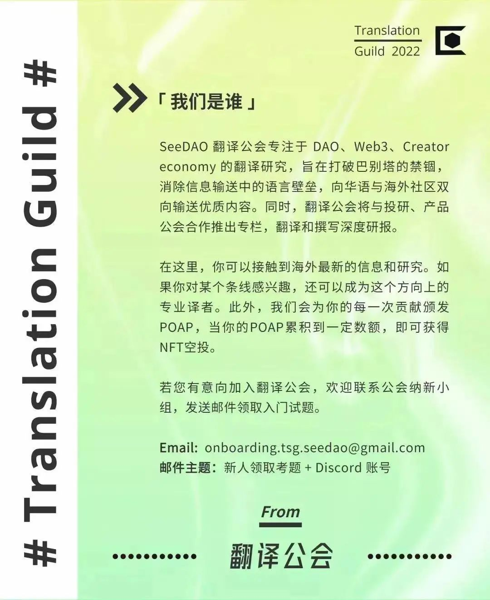

DAO 未来将走向何处呢?专家们将从规模、模板、方案等角度，探讨以后的DAO 将是什么样子的！
我们问专家：“ 我们已经看到了几千个 DAO 的建立。但是，接下来的 10000 个 DAO 将如何构建呢？规模是大还是小？是通过自定义构建还是通过模板构建呢？”

DAO是越变越大，还是越变越小？
专家说两者都会。
See DAO
对于接下来 10000 个 DAO 的规模，专家们有不同的看法。Solidity Guild 的 Zakk 认为，DAO 的任务和范围会变得更大。在他看来，规模更大的 DAO 可能意味着更多的人参与到你正在构建的系统中，这也可能意味着更大的使命，或者尝试去解决更大的问题。
这些“更大”的问题可能是 web2 时代一直回避的重大问题，比如解决气候危机或为没有银行账户的人提供银行服务。
Constitution DAO 有“一个无限长度的使命（译者注：原文如此）。Cabin 试图建立一个横跨全世界的城市。理论上，这项工作永远不会结束。”
总之：“要么让一大群人去完成一项有时间限制的、非常聚焦在某个目标上的任务，要么让这些任务可以无限延长，理论上可以永远持续下去。”
Twali 的 Cokie 不同意这种观点。她表示，服务性质的 DAO ( 主要为他人、其它的 DAO 或公司提供服务的 DAO ) 规模可能会缩小。“ DAO 的第一次迭代非常大，从长远来看，这可能会伤害到这些 DAO ” 她说, “ 他们会因为缺乏专注和方向而经历挣扎。”
她指出，小团队在实现目标和服务客户方面可以发挥难以置信的有效性。 她说：“ 在 web2中，我们看到了小团队的力量。抛弃我们在 web2 中所学到的一切可能会让 DAO 倒退。 ”
此外，IndieDAO 的 Katy 还谈到了在大型 DAO 中人与人之间的信任会非常困难。她赞同Cokie 的观点，认为小型的专业团队将会兴起。她说， “ 我认为 DAO 的趋势是人们高度信任地合作，而这种信任只有在小团队中才能真正地实现。”
划重点：
任务可以在规模维度和时间维度上进行扩展，例如处理更大的问题和解决无限延长的任务。
团队的规模可能会变小，变得高度专业化，小团队会因为内部有高度信任而可以快速行动。
在web2中，我们看到了小团队的力量。——Cokie

模板、企业解决方案和少量的中心化
可以让 DAO 创建者入门
See DAO
模板可以快速构建，还可能带来更多的 DAO 加入。
DAO 需要真正的企业解决方案。
中心化与引入不同的权限和治理控制可能是一个非常强大的组合。


混合 DAO：在传统公司中嵌套 DAO
可能是一个杀手级的应用场景
See DAO
Otoco 公司的 Dogstoevsky 谈到，一些 DAO 创建者开始创建 DAO 的事业，是因为他们认为这是一种更简单的创业方式。他说：“ 很多人把 DAO 等同于一家轻型公司，但事实并非如此。” 他指出，与如今的传统公司相比，在 DAO 中进行基础运营要困难得多，而且很多 DAO 创建者并没有意识到这一点。
“ 我认为我们将看到 DAO 不是作为一个完整的组织而存在，而是作为中心公司的一个分支或子部分而存在…… 目前许多成功的 DAO 都相当中心化，但它们在几个关键领域是去中心化的，而去中心化正是这些领域的价值主张。”
例如，在去中心化媒体、创建一个社交俱乐部或者解决气候变化等重大问题时，去中心化是一个巨大的价值主张。 但在集中管理的小型团队中，何时才能出色地将其运用起来呢？ 这些人可能会留在“公司”中，然后用一个以去中心化作为核心价值主张的 DAO 分支来进行投票等去中心化的工作。
Twali 公司的 Cokie谈到了类似的混合结构。她提到福利和稳定薪酬的重要性，以及只有中心化实体才能提供这种待遇。“在 Twali，我们的运营就像一家普通的初创公司，因为我们可以提供一些好处。我们坚信，未来的工作是有报酬的，报酬也很高。”
为了让 DAO 发挥作用，去中心化需要成为一种价值主张。
薪酬和福利是实行中心化实体的关键原因，尤其是在熊市难以吸引人才的情况下。


DAO 迭代是生态系统增长的关键
See DAO
所有专家都认同一个关键事实: DAO 并非停滞不前。我们今天看到的 DAO 结构和我们五年后看到的 DAO 结构绝不相同。
Cokie说：“没有理由未来的工作必须是零碎的或无效的。”世界上的工作不必在每一个细节上都缓慢地达成共识，要不然我们会深陷细节的泥沼而停滞不前。
对 IndieDAO 的 Katy 来说，她希望看到这个生态系统有更多的迭代。“ 我不希望现在就看到 DAO 的形态的终局。对我们来说，这样做还为时过早，如果我们这样做了，我们将陷入与互联网泡沫时期相同的陷阱。我不认为它现在的样子就是未来的样子。”
但在迭代过程中，我们可能会看到许多 DAO 走向失败。Zakk 说 :“ 很多努力都会失败，但这是解决问题必经的一部分过程。”
Developer DAO 的 Gordo 补充说，我们最终应用到的新组织甚至可能不被称为 DAO ——它们只是更有效的组织方式，每个人都在使用它，甚至不用考虑它。“ 最棒的应用是治理开始与法律和社会环境接轨的时候，你可以相信，区块链上写的东西会得到合法认可。突然之间，我们将拥有大量潜在的人类组织。也许我们不再称它们为 DAO 了，因为你只知道他们是一种工具，可以让你和朋友们组织起来，或者让整个国家的人一起做些事情。”
许多 DAO 都将失败，但要想在这个生态系统中取得进展，这一点是必要的。
DAO 目前还没有一个明确的最终解决方案——如果有，我们可能会看到一场大崩盘。
未来，DAO 可能成为默认的组织系统——它们甚至不再被称为 DAO，它们只是人类组织的一种方式

我们迫不及待地想参与未来 10000 个 DAO 的增长！
原文作者：Samantha Marin
译者：July
校对：Sirs
排版：July
审核：SuanNai
